Рабочее место оператора (РМО) состоит из трех основных блоков. Первый блок представляет собой пульт управления технологическим процессом гидроиспытаний (далее пульт управления), панель оператора Siemens Simatic Multipanel (далее панель оператора), экограф и монитор компьютера. Второй блок – блок наблюдения за давлением в системе (далее блок манометров). Третий блок отвечает за управление накопительным транспортером, однотрубным передатчиком и сортировочным карманом (далее пульт входа-выхода).
Пульт управления, представленный на рисунке 1, позволяет оператору проводить гидравлические испытания, управлять узлами гидропресса в автоматическом или ручном режимах. Далее рассмотрим функциональные возможности пульта оператора.
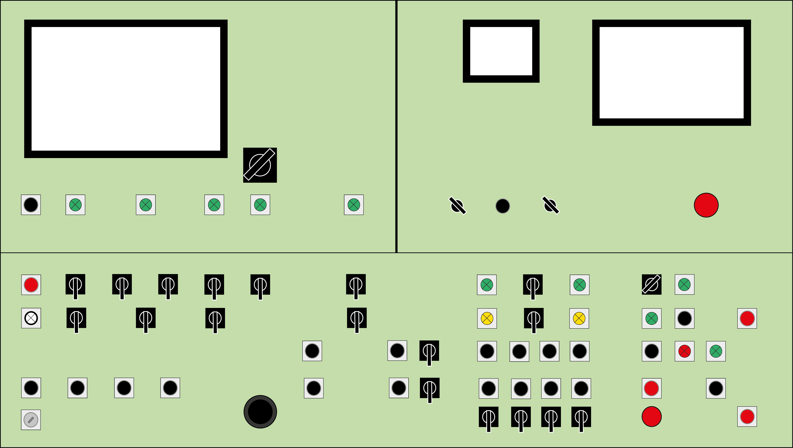
Рисунок 1 - Пульт оператора
На рисунке 2 показаны условные обозначения, принятые в рисунках, определяющих функциональные части пульта оператора:
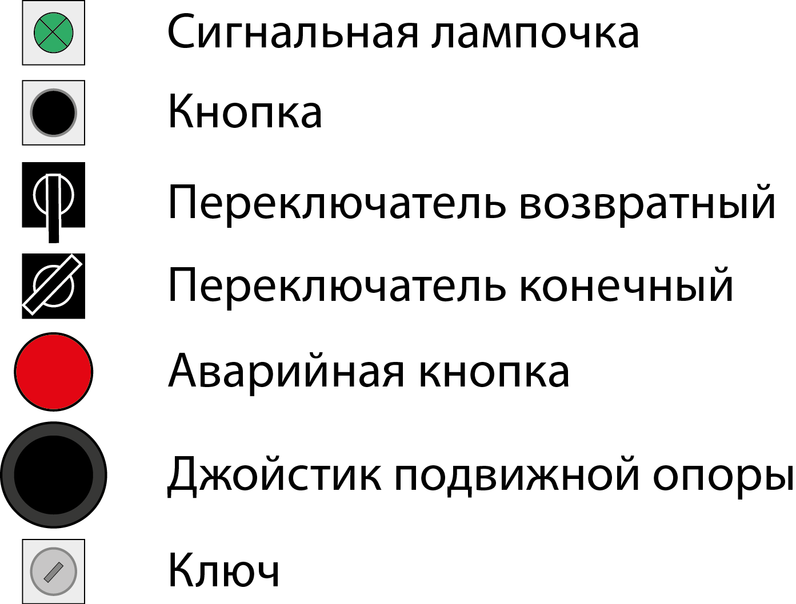
Рисунок 2 - Условные обозначения
На рисунке 3 представлена часть пульта оператора, отвечающая за переключение автоматического и ручного режима работы гидропресса.
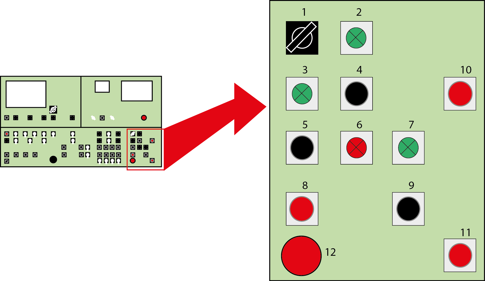
Рисунок 3 - Пульт оператора: режимы работы гидропресса
На рисунке 4 представлена часть пульта оператора, отвечающая за управление станцией испытаний:
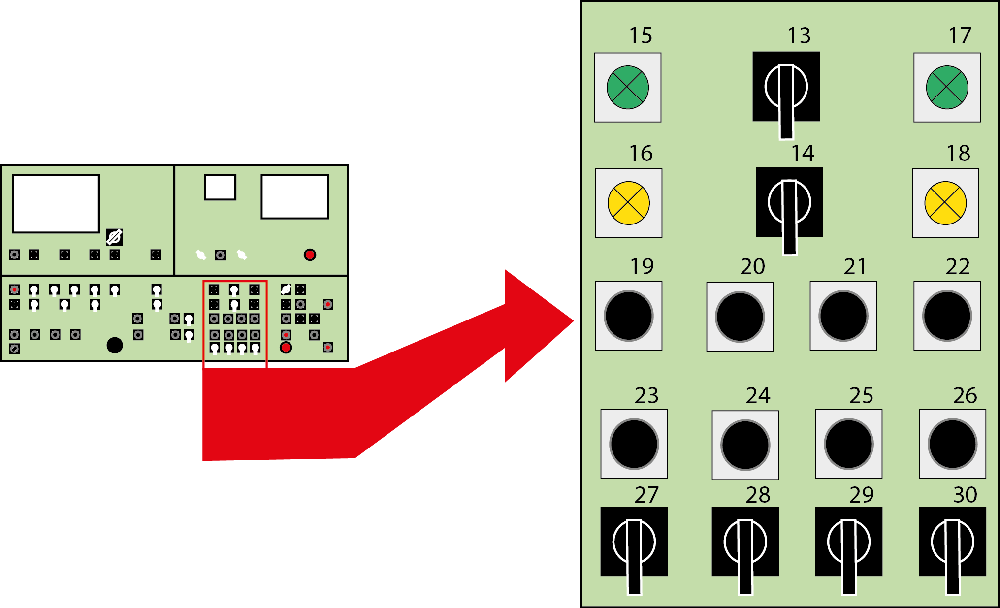
Рисунок 4 - Пульт оператора: управление станцией испытаний
На рисунке 5 представлена часть пульта оператора, отвечающая за станцию продувки, управления поперечным транспортом, передаточными тележками, подвижной контропоры:
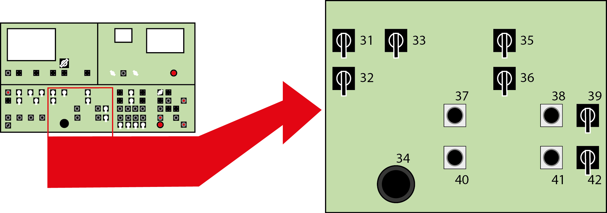
Рисунок 5 - Пульт оператора: управление станцией продувки
На рисунке 6 представлена часть пульта оператора, отвечающая за включение гидропресса, управление станциями измерения и промывки:
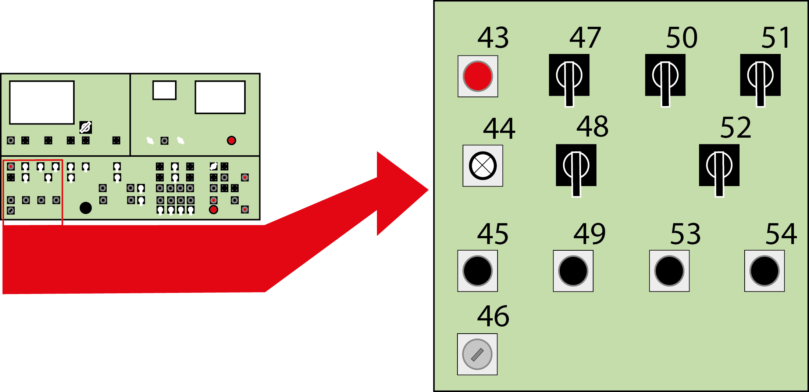
Рисунок 6 - Пульт оператора: управление электропитанием гидропресса
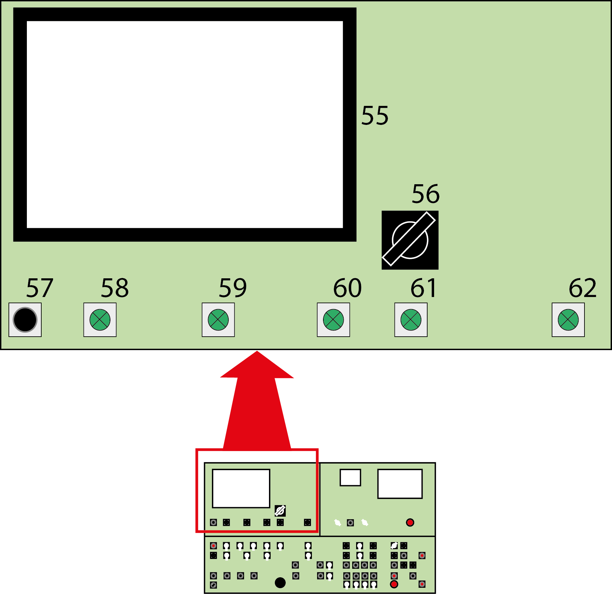
Рисунок 7 - Пульт оператора: сигналы состояний
На рисунке 7 представлена часть пульта оператора, включающая в себя:
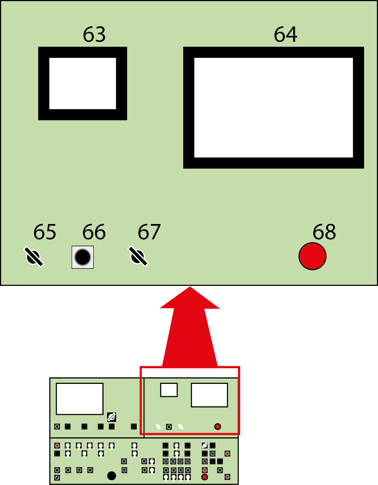
Рисунок 8 - Пульт оператора: экограф и панель оператора
На рисунке 8 представлена часть пульта оператора, включающая в себя:
Пульт входа-выхода представленный на рисунке 9, позволяет оператору управлять накопительным транспортером, сортировочным карманом и однотрубным передатчиком в автоматическом или ручном режимах. Далее рассмотрим функциональные возможности пульта входа-выхода.
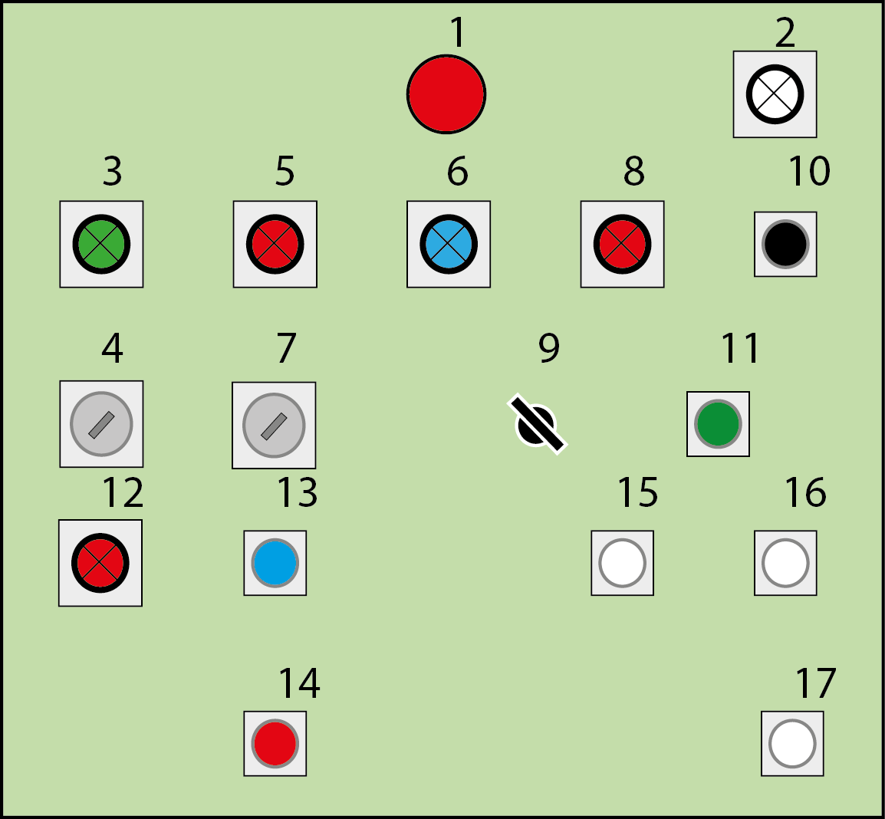
Рисунок 9 – Пульт входа-выхода
Панель оператора, представленная на рисунке 10, позволяет оператору устанавливать входные параметры цикла испытаний, проводить мониторинг испытаний, проводить диагностику масляной и автоматической систем.
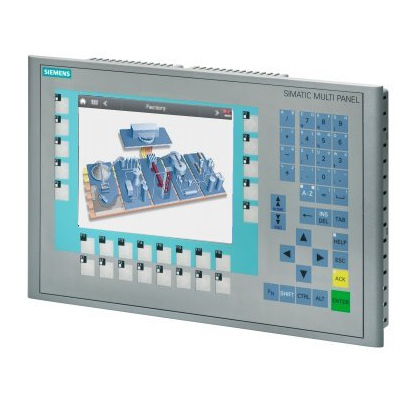
Рисунок 10 – Панель оператора MP-277 производства Siemens
Экограф, представленный на рисунке 11, является экономичной альтернативой для приборов самопишущих, использующих бумагу, может использоваться для записи и контроля параметров технологических процессов (температуры и других физических величин). На ЖК-дисплей выводятся графики проводимых испытаний. Данные проводимых испытаний записываются на карту памяти, используемую отделом контроля качества.
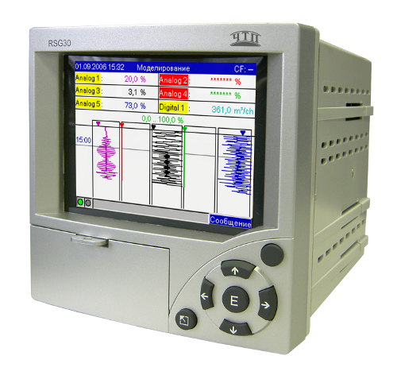
Рисунок 11 – Экограф-Т
На монитор компьютера выводится программа MES «Малахит» (рисунок 12) — специализированное прикладное программное обеспечение, предназначенное для решения задач синхронизации, координации, анализа и оптимизации выпуска продукции в рамках какого-либо производства. MES-системы относятся к классу систем управления уровня цеха, но могут использоваться и для интегрированного управления производством на предприятии в целом. В программе «Малахит» оператору необходимо отслеживать наименование нормативного документа, размер испытываемых труб, марку стали, группу прочности. Согласно этим данным, на панели оператора устанавливаются входные параметры цикла испытаний. Также в программе «Малахит» оператор регистрирует количество брака за смену.
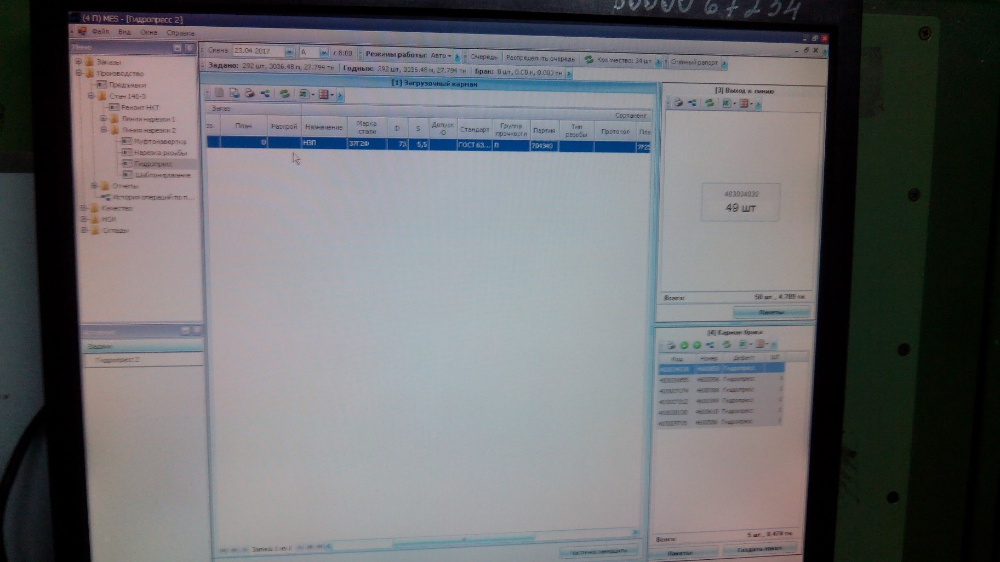
Рисунок 12 – Вкладка «Гидропресс» программы MES "Малахит"
Блок манометров представлен на рисунке 13. Верхние манометры давления масла подключены к задним зажимным головкам и показывают подпор задних головок. Цена деления – 10 бар. Максимальное давление – 400 бар. Нижние манометры высокого давления показывают давление с датчиков, установленных на клапанах высокого давления. Цена деления – 20 бар. Максимальное давление – 1000 бар. Поверка манометров проводится каждые три месяца.
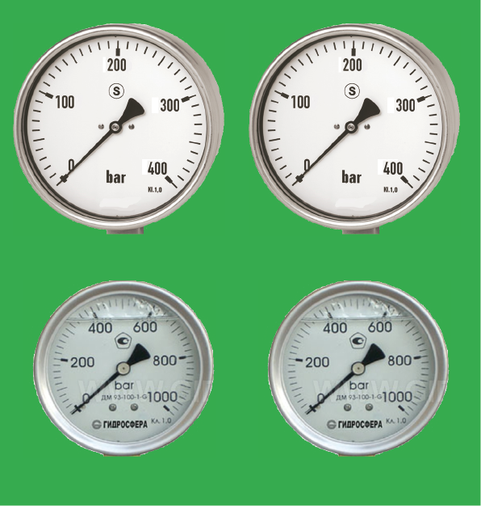
Рисунок 13 – Блок манометров